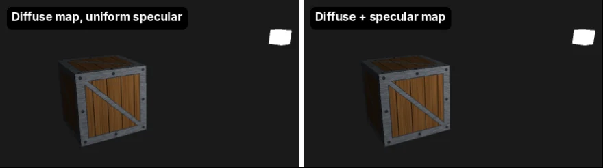

Lighting
Lighting Maps#
examples/Sources/09-LightingMaps, run with swift run LightingMaps. Download all examples or see how to run them.A material with one color per object is still too coarse. A wooden crate with a steel frame is two materials on one surface: the wood is dull, the steel is shiny. The answer is to store material properties in textures, so they can vary per pixel. Such textures are called lighting maps.
Diffuse maps#
A diffuse map is what earlier chapters simply called a texture: an image holding the surface's color at every point. Replace the material's diffuse color with a texture lookup, and use the same value for ambient:
struct Material {
float shininess;
};
fragment float4 fragment_main(VertexOut in [[stage_in]],
constant FragmentUniforms &uniforms [[buffer(1)]],
texture2d<float> diffuseMap [[texture(0)]],
texture2d<float> specularMap [[texture(1)]],
sampler mapSampler [[sampler(0)]]) {
Light light = uniforms.light;
float3 albedo = diffuseMap.sample(mapSampler, in.uv).rgb;
float3 normal = normalize(in.normal);
float3 lightDir = normalize(light.position - in.worldPosition);
float3 viewDir = normalize(uniforms.viewPosition - in.worldPosition);
float3 reflectDir = reflect(-lightDir, normal);
float3 ambient = light.ambient * albedo;
float diff = max(dot(normal, lightDir), 0.0);
float3 diffuse = light.diffuse * diff * albedo;
float3 specularColor = specularMap.sample(mapSampler, in.uv).rgb;
float spec = pow(max(dot(viewDir, reflectDir), 0.0), uniforms.material.shininess);
float3 specular = light.specular * spec * specularColor;
return float4(ambient + diffuse + specular, 1.0);
}
Remember to shrink the Swift Material struct to match.
Specular maps#
The specular map is a second image, usually grayscale, that says how strongly each point reflects highlights. For the crate it is black over the wood and bright over the steel frame, with scratches and wear painted in. Black means no highlight; white means full.
Load both images and bind them to the two texture slots:
diffuseMap = try! loader.newTexture(URL: url(for: "container2", "png"), options: options)
specularMap = try! loader.newTexture(URL: url(for: "container2_specular", "png"), options: options)
encoder.setFragmentTexture(diffuseMap, index: 0)
encoder.setFragmentTexture(specularMap, index: 1)
encoder.setFragmentSamplerState(samplerState, index: 0)
Now only the metal border of the crate shines, and the highlight breaks up over its scratches.

One sampler, many textures#
Both maps are read through the same sampler. A sampler describes how to read, and that is nearly always the same for all maps of a material, so a single sampler state is typical.
Single-channel textures#
A grayscale specular map wastes three channels when loaded as RGBA. Metal has one-channel formats such as .r8Unorm, and a PNG saved as grayscale is loaded that way by MTKTextureLoader. In the shader you then read only .r:
float specularStrength = specularMap.sample(mapSampler, in.uv).r;
Real asset pipelines go further and pack several grayscale maps into the channels of one texture, for example roughness in green and metalness in blue. You will see that in the PBR section.
Exercises#
- Invert the specular map in the shader so the wood shines and the steel does not.
- Use a colored specular map and see how it tints the highlights.
- Add an emission map: a third texture whose color is added to the result regardless of lighting, making parts of the object appear to glow.